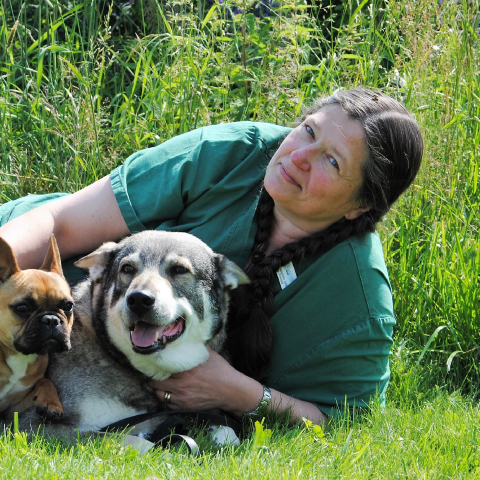

På sjukhusen för djur jobbar inte bara veterinärer. Här finns också djursjukskötare, djurvårdare, biomedicinska analytiker som arbetar på laboratoriet, receptionister och lokalvårdare.
– Alla som jobbar hos oss är lika viktiga för att vi ska kunna ge djuren den hjälp de behöver, berättar Ing-Marie Brokvist som arbetar som legitimerad djursjukskötare på Nordvärmlands Smådjurspraktik.

Många år i skolan ligger bakom de kunskaper veterinärerna har om djurs hälsa.
– Man måste kunna ta hand om både djuret och deras husse eller matte. Det är också bra om man är intresserad av djur, hur deras kroppar fungerar och vilka sjukdomar de kan få.
Ibland kan det till och med vara så att djuren behöver besöka tandläkaren. På smådjurskliniken i Torsby är det tandläkare Erik som då hjälper till. Oftast är det en trasig tand som behöver lagas eller dras ut.
– Han är även tandläkare för människor!
Men att arbeta med patienter som inte kan prata människospråk är inte alltid lätt.
– De kan ju inte berätta var de har ont eller på vilket sätt de mår dåligt. Då måste vi vara litesom detektiver och göra olika undersökningar för att hitta vad problemet är så att vi kan hjälpa dem, berättar Ing-Marie.
Hon berättar också att djuren ibland kan bli blyga och osäkra, medan andra tycker det är hur kul som helst! Det viktiga är att vara lugn och trygg som veterinär i alla situationer förklarar hon.
– Djuren kan känna om vi är osäkra och då kan de ibland bli mer osäkra.
Har jobbat som veterinär i: 33 år Favoritdjur: Hund Det bästa med mitt jobb är: Att jag lär mig något nytt varje dag. Alla djur är unika på sitt sätt. Jag träffar också många trevliga människor. Det är så härligt att få hjälpa djuren och jag blir glad när de är friska. Det är världens roligaste jobb!
Har jobbat som veterinär i: 8 år Favoritdjur: Hund och katt Det bästa med mitt jobb är: Att få hjälpa djur som behöver hjälp!
De allra vanligaste djuren som besöker klinikenär hundar och katter. Men även kaniner, hästar, marsvin, hamstrar, råttor fåglar och ormar knackar på tillsammans med sina ägare.
– Det mest ovanliga djuret var nog en tam egyptisk långörad igelkott, som hade ont i ett ben, avslöjade Ing-Marie för oss.
De olika djuren och de olika problemen veterinärerna ställs inför gör att man lär sig nya saker hela tiden, säger Ing-Marie och fortsätter med att berätta vad det allra bästa med jobbet är:
– Det är ju när vi kan hjälpa djuren att bli friska och pigga igen!
DJURSKÖTAREN FÖRKLARAR: Rehabilitering är ungefär som träning eller gympa, men väldigt försiktigt. Om en hund till exempel har skadat ett ben kan den behöva ett ”träningsprogram” för att bygga upp sina muskler igen, På vår rehab-avdelning har vi bland annat en ”water treadmill”. Det är som ett gåband i vatten. Vi har också stora träningsbollar som vi använder för att hjälpa hundarna at t träna upp sin balans och sina muskler.